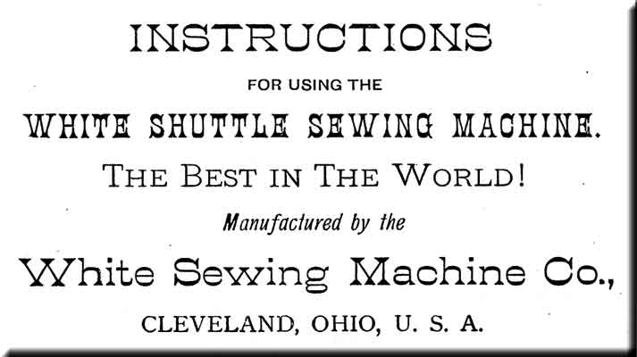
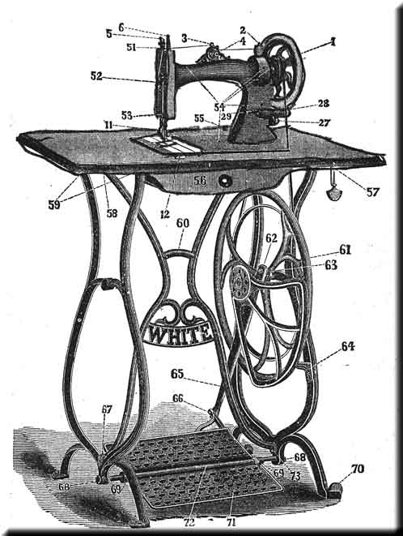

At a very large expense, we have had the White Shuttle Sewing Machine explicitly illustrated, and within the following pages we submit these illustrations with such explanations as will enable any one, with little or no experience, to readily understand and satisfactorily work the machine.
All we ask is that you will carefully read and follow these directions, and you can confidently rest assured that you will find yourself the possessor of the best Sewing Machine in the world.
------------------------
The White Shuttle Sewing Machine is minutely inspected, thoroughly tested, and shipped to you in complete working order. In all ordinary shipments, these machines are sent in good order, "set up and crated", so that you need only exercise some little care in unpacking them, and in cleaning off the dirt and dust it may have received in transit to you. Then oil, as hereinafter directed, and your machine is ready for use.
------------------------
For large jobbers or for the export trade, where orders are for one hundred or more machines at a time, we ship securely and compactly boxed, so that in transportation charges a big saving is obtained.
In this manner of shipping, as before stated, all the work is carefully inspected; the heads of the machines have been tested in sewing, and are boxed by themselves, whilst the stands are taken apart and shipped in as small and compact shape as possible. Consequently, for the information of this class of trade, we submit and call attention to our first illustration -- THE STAND -- and explanation as to how to set it up properly.

In the first place, remove the nuts 68-68 and cones 69-69 from the treadle rod 72 and slide the treadle 71 on the rod with cone on each side of the treadle.
In the second place, attach the stud 63 securely to the right hand leg then slide upon this stud, in regular rotation, one of the cones, balance wheel, and the remaining cone, so that the pointed ends of the cone will fit snugly into the balance wheel; they should fit neither too tight nor too loose but so as to permit the wheel to revolve true and with but little friction. WITH THESE CONES THE OPERATOR IS ENABLED READILY TO TAKE UP ANY LOST MOTION OR WEAR, AND THEREBY RELIEVE THE BALANCE WHEEL FROM IRREGULAR MOTION AND UNNECESSARY NOISE. Next, attach the pitman 65 to the balance wheel, then the shield to the right hand leg at 64.
Having thus put together these disconnected parts it is an easy matter for a beginner to determine their relative positions by reference to the cut. 60 represents the brace. The left hand and the right hand legs are connected to the braceby screws as shown in cut. 57 represents the oil can in its holder. 55 represents a wooden pin in table for machine to rest on when turned back for oiling; this pin is taken out of the table and packed with the stand when it is shipped in boxes.
To have the machine run extraordinarily light the greatest care must be exercised in setting up the stand work. Every thing must be true and in line.
Be sure that you have the wood work placed upon the stand so that the belt does not rub against it, and also, so that it does not rub against the balance wheel of the machine.
If the stand rests upon the floor in an uneven manner and the floor is level it is evident that the stand is not properly set up, in which case loosen the screws and nuts and place the stand in its proper position, and gradually tighten its connections.
Place the tube rubbers in the holes in the front part of the table before you connect the machine head, by its hinges, to the table.
To prevent noise, no part of the machine should touch the wood work, but the machine head should rest entirely upon the table and hinge rubbers.
----------------------------
We have now the machine upon its table, connected to the stand, and the next lesson for a beginner is to become thoroughly acquainted with the operation of the machine.
WE CLAIM AN IMPORTANT IMPROVEMENT IN TREADLES, BY ALLOWING "ROOMY" SPACE FOR THE FEET SO THAT THE OPERATOR IS NOT "CRAMPED UP" BY THE USE OF BOTH FEET. Physicians will acknowledge the advantages of this improvement, and will tell you that nearly all the diseases contracted by seamstresses and working girls in the use of the sewing machine arise from the cramped position in which they have been compelled heretofore to sit and place their feet upon so little space, and from the fact that the majority of sewing machines run too heavy.
THESE OBJECTIONS ARE REMOVED IN THE WHITE SHUTTLE SEWING MACHINE
The treadle movement should be thoroughly learned, so that the operator can readily revolve the balance wheel by means of the treadle with either foot.
Remove the belt from the balance wheel and place your feet on the treadle directly over the treadle rod, then take hold of the balance wheel and turn it toward you, allowing the feet to move freely with the motion thus commenced, and continue this motion by an alternate pressure of the heel and toe until a regular and easy motion is obtained.
Do not attempt to learn anything else until you are proficient in the use of the treadle, so that you can start it and stop it without ever turning it in the wrong direction.
------------------------------
Having become perfectly familiar with the treadle movement, now replace the belt and connect the fly wheel of the machine with the balance wheel of the stand; raise the presser foot 11 with the lever 7, remove the slides over the shuttle and take out the shuttle; then start the fly wheel of the machine towards you and continue the motion thus imparted, with the feet, as per instructions given above.
After becoming expertly proficient in this motion and without the shuttle in or the machine threaded, place a piece of cloth between the feed and the presser foot; let the presser foot down upon it and operate the machine in this way until you are accustomed to guiding the material in whatever direction you might desire.
NOTE -- Do not run the machine with the presser foot down on the feed and no cloth between the two.
Do not pull the cloth to or from you in such a manner as to bend the needle.
Do not undertake to do practical sewing, but pratice upon strips of cloth until you can produce a regular motion of the machine and guide the work as you wish.
Raise the needle bar 6 to its highest point and pass the shank of the needle up into the hole in the needle bar as far as you can push it, with the long grooves of the needle turned precisely toward the left and fasten securely with the needle screw.
TO SEW EXTRAORDINARILY HEAVY GOODS IT MAY BE NECESSARY TO LOWER THE NEEDLE A VERY LITTLE
The needle when descending should pass through the center of the the throat plate and if properly set the point of the shuttle should enter the largest part of the loop formed with the thread.
---------------------------
The size of the needle should conform to the size of the thread, and both be suitable to the material sewed. Use as fine a needle as will permit the thread to pass freely through the eye.
A No. 1 needle may be used for all kinds of ordinary family sewing, where thread from numbers 50 to 80 is used; there is seldom a necessity of using a coarser cotton than No. 30, because every stitch made by a sewing machine is just double as strong as one made by hand. In general sewing use the same size of thread above and below.
Be careful that your needles are perfect -- not bent, nor blunt points. We especially request our dealers to buy their needles and oil from us. All genuine needles are stamped "White" on the shank.
The following index will show the size of needle, thread and silk to be used:
|
COTTON
|
TWIST
|
NEEDLE
|
|
150 to 300
|
000
|
000
|
|
90 to 150
|
00
|
00
|
|
70 to 90
|
o
|
0
|
|
50 to 70
|
A & B
|
1
|
|
30 to 50
|
C
|
2
|
|
20 to 30
|
D
|
3
|
|
8 to 20
|
E & F
|
|
For leather, use a twist pointed needle.